Bonded interactions¶
Bonded interactions are based on a fixed list of atoms. They are not exclusively pair interactions, but include 3- and 4-body interactions as well. There are bond stretching (2-body), bond angle (3-body), and dihedral angle (4-body) interactions. A special type of dihedral interaction (called improper dihedral) is used to force atoms to remain in a plane or to prevent transition to a configuration of opposite chirality (a mirror image).
Bond stretching¶
Harmonic potential¶
The bond stretching between two covalently bonded atoms \(i\) and \(j\) is represented by a harmonic potential (see also Fig. 19):
With the corresponding force given by:

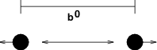
Fig. 19 Principle of bond stretching.¶
Fourth power potential¶
In the GROMOS-96 force field 77, the covalent bond potential is, for reasons of computational efficiency, written as:
The corresponding force is:
The force constants for this form of the potential are related to the usual harmonic force constant \(k^{b,\mathrm{harm}}\) (sec. Bond stretching) as
The force constants are mostly derived from the harmonic ones used in GROMOS-87 78. Although this form is computationally more efficient (because no square root has to be evaluated), it is conceptually more complex. One particular disadvantage is that since the form is not harmonic, the average energy of a single bond is not equal to \({\frac{1}{2}}kT\) as it is for the normal harmonic potential.
Morse potential bond stretching¶
For some systems that require an anharmonic bond stretching potential, the Morse potential 79 between two atoms i and j is available in GROMACS. This potential differs from the harmonic potential in that it has an asymmetric potential well and a zero force at infinite distance. The functional form is:
See also Fig. 20, and the corresponding force is:
where \(\displaystyle D_{ij}\) is the depth of the well in kJ/mol, \(\displaystyle \beta_{ij}\) defines the steepness of the well (in nm\(^{-1}\)), and \(\displaystyle b_{ij}\) is the equilibrium distance in nm. The steepness parameter \(\displaystyle \beta_{ij}\) can be expressed in terms of the reduced mass of the atoms i and j, the fundamental vibration frequency \(\displaystyle\omega_{ij}\) and the well depth \(\displaystyle D_{ij}\):
and because \(\displaystyle \omega = \sqrt{k/\mu}\), one can rewrite \(\displaystyle \beta_{ij}\) in terms of the harmonic force constant \(\displaystyle k_{ij}\):
For small deviations \(\displaystyle (r_{ij}-b_{ij})\), one can approximate the \(\displaystyle \exp\)-term to first-order using a Taylor expansion:
and substituting (177) and (178) in the functional form:
we recover the harmonic bond stretching potential.

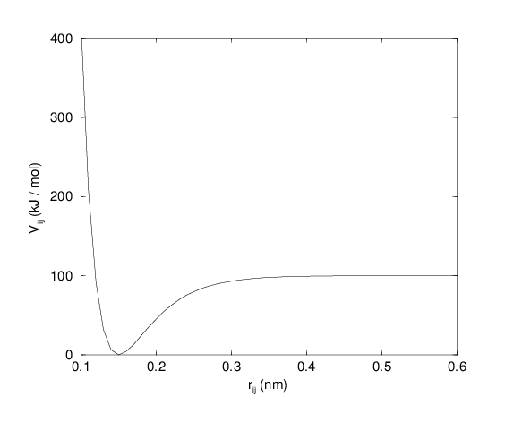
Fig. 20 The Morse potential well, with bond length 0.15 nm.¶
Cubic bond stretching potential¶
Another anharmonic bond stretching potential that is slightly simpler than the Morse potential adds a cubic term in the distance to the simple harmonic form:
A flexible water model (based on the SPC water model 80)
including a cubic bond stretching potential for the O-H bond was
developed by Ferguson 81. This model was found to yield a
reasonable infrared spectrum. The Ferguson water model is available in
the GROMACS library (flexwat-ferguson.itp). It should be noted that the
potential is asymmetric: overstretching leads to infinitely low
energies. The integration timestep is therefore limited to 1 fs.
The force corresponding to this potential is:
FENE bond stretching potential¶
In coarse-grained polymer simulations the beads are often connected by a FENE (finitely extensible nonlinear elastic) potential 82:
The potential looks complicated, but the expression for the force is simpler:
At short distances the potential asymptotically goes to a harmonic potential with force constant \(k^b\), while it diverges at distance \(b\).
Harmonic angle potential¶
The bond-angle vibration between a triplet of atoms \(i\) - \(j\) - \(k\) (Fig. 19) is also represented by a harmonic potential on the angle \({\theta_{ijk}}\)

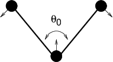
Fig. 21 Principle of angle vibration.¶
As the bond-angle vibration is represented by a harmonic potential, the form is the same as the bond stretching.
The force equations are given by the chain rule:
The numbering \(i,j,k\) is in sequence of covalently bonded atoms. Atom \(j\) is in the middle; atoms \(i\) and \(k\) are at the ends (see Fig. 21). Note that in the input in topology files, angles are given in degrees and force constants in kJ/mol/rad\(^2\).
Cosine based angle potential¶
In the GROMOS-96 force field a simplified function is used to represent angle vibrations:
where
The corresponding force can be derived by partial differentiation with respect to the atomic positions. The force constants in this function are related to the force constants in the harmonic form \(k^{\theta,\mathrm{harm}}\) (Harmonic angle potential) by:
In the GROMOS-96 manual there is a much more complicated conversion formula which is temperature dependent. The formulas are equivalent at 0 K and the differences at 300 K are on the order of 0.1 to 0.2%. Note that in the input in topology files, angles are given in degrees and force constants in kJ/mol.
Restricted bending potential¶
The restricted bending (ReB) potential 83 prevents the bending angle \(\theta\) from reaching the \(180^{\circ}\) value. In this way, the numerical instabilities due to the calculation of the torsion angle and potential are eliminated when performing coarse-grained molecular dynamics simulations.
To systematically hinder the bending angles from reaching the \(180^{\circ}\) value, the bending potential (186) is divided by a \(\sin^2\theta\) factor:
Figure 22 shows the comparison between the ReB potential, (189), and the standard one (186).

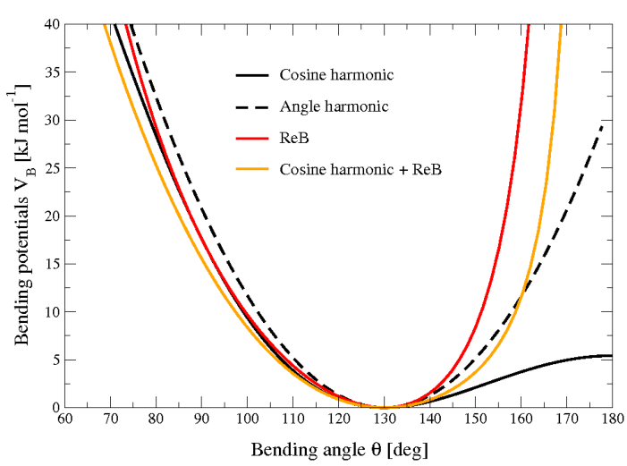
Fig. 22 Bending angle potentials: cosine harmonic (solid black line), angle harmonic (dashed black line) and restricted bending (red) with the same bending constant \(k_{\theta}=85\) kJ mol\(^{-1}\) and equilibrium angle \(\theta_0=130^{\circ}\). The orange line represents the sum of a cosine harmonic (\(k =50\) kJ mol\(^{-1}\)) with a restricted bending (\(k =25\) kJ mol\(^{-1}\)) potential, both with \(\theta_0=130^{\circ}\).¶
The wall of the ReB potential is very repulsive in the region close to \(180^{\circ}\) and, as a result, the bending angles are kept within a safe interval, far from instabilities. The power \(2\) of \(\sin\theta_i\) in the denominator has been chosen to guarantee this behavior and allows an elegant differentiation:
Due to its construction, the restricted bending potential cannot be used for equilibrium \(\theta_0\) values too close to \(0^{\circ}\) or \(180^{\circ}\) (from experience, at least \(10^{\circ}\) difference is recommended). It is very important that, in the starting configuration, all the bending angles are in the safe interval to avoid initial instabilities. This bending potential can be used in combination with any form of torsion potential. It will always prevent three consecutive particles from becoming collinear and, as a result, any torsion potential will remain free of singularities. It can be also added to a standard bending potential to affect the angle around \(180^{\circ}\), but to keep its original form around the minimum (see the orange curve in Fig. 22).
Urey-Bradley potential¶
The Urey-Bradley bond-angle vibration between a triplet of atoms \(i\) - \(j\) - \(k\) is represented by a harmonic potential on the angle \({\theta_{ijk}}\) and a harmonic correction term on the distance between the atoms \(i\) and \(k\). Although this can be easily written as a simple sum of two terms, it is convenient to have it as a single entry in the topology file and in the output as a separate energy term. It is used mainly in the CHARMM force field 84. The energy is given by:
The force equations can be deduced from sections Harmonic potential and Harmonic angle potential.
Linear Angle potential¶
The linear angle potential was designed especially for linear compounds such as nitriles and for carbon dioxide 190. It avoids the calculation of the angle per se, since the angle force is not well-defined if the angle is 180 degrees. Rather, it computes the deviation of a central atom in a triplet i,j,k from a reference position
where a is defined by the bond-length i-j and j-k, in a symmetric molecule such as carbon dioxide a = 1/2. If the compound has different bond lengths \(b_{ij}\) and \(b_{jk}\) respectively, we instead have
If the order of atoms is changed to k,j,i, a needs to be replaced by 1-a. The energy is now given by
with \(k_{lin}\) the force constant. For examples, and a derivation of the forces from the energy function, see ref. 190.
Bond-Bond cross term¶
The bond-bond cross term for three particles \(i, j, k\) forming bonds \(i-j\) and \(k-j\) is given by 85:
where \(k_{rr'}\) is the force constant, and \(r_{1e}\) and \(r_{2e}\) are the equilibrium bond lengths of the \(i-j\) and \(k-j\) bonds respectively. The force associated with this potential on particle \(i\) is:
The force on atom \(k\) can be obtained by swapping \(i\) and \(k\) in the above equation. Finally, the force on atom \(j\) follows from the fact that the sum of internal forces should be zero: \(\mathbf{F}_j = -\mathbf{F}_i-\mathbf{F}_k\).
Bond-Angle cross term¶
The bond-angle cross term for three particles \(i, j, k\) forming bonds \(i-j\) and \(k-j\) is given by 85:
where \(k_{r\theta}\) is the force constant, \(r_{3e}\) is the \(i-k\) distance, and the other constants are the same as in (192). The force associated with the potential on atom \(i\) is:
Quartic angle potential¶
For special purposes there is an angle potential that uses a fourth order polynomial:
Improper dihedrals¶
Improper dihedrals are meant to keep planar groups (e.g. aromatic rings) planar, or to prevent molecules from flipping over to their mirror images, see Fig. 23.

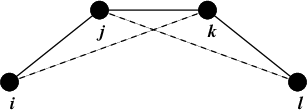
Fig. 23 Principle of improper dihedral angles. Out of plane bending for rings. The improper dihedral angle \(\xi\) is defined as the angle between planes (i,j,k) and (j,k,l).¶

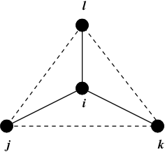

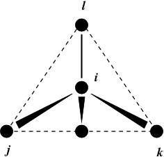
Fig. 24 Principle of improper dihedral angles. Out of tetrahedral angle. The improper dihedral angle \(\xi\) is defined as the angle between planes (i,j,k) and (j,k,l).¶
Improper dihedrals: harmonic type¶
The simplest improper dihedral potential is a harmonic potential; it is plotted in Fig. 25.
Since the potential is harmonic it is discontinuous, but since the discontinuity is chosen at 180\(^\circ\) distance from \(\xi_0\) this will never cause problems. Note that in the input in topology files, angles are given in degrees and force constants in kJ/mol/rad\(^2\).

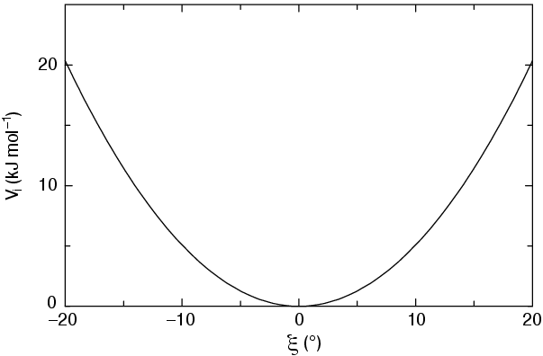
Fig. 25 Improper dihedral potential.¶
Improper dihedrals: periodic type¶
This potential is identical to the periodic proper dihedral (see below). There is a separate dihedral type for this (type 4) only to be able to distinguish improper from proper dihedrals in the parameter section and the output.
Proper dihedrals¶
For the normal dihedral interaction there is a choice of either the GROMOS periodic function or a function based on expansion in powers of \(\cos \phi\) (the so-called Ryckaert-Bellemans potential). This choice has consequences for the inclusion of special interactions between the first and the fourth atom of the dihedral quadruple. With the periodic GROMOS potential a special 1-4 LJ-interaction must be included; with the Ryckaert-Bellemans potential for alkanes the 1-4 interactions must be excluded from the non-bonded list. Note: Ryckaert-Bellemans potentials are also used in e.g. the OPLS force field in combination with 1-4 interactions. You should therefore not modify topologies generated by pdb2gmx in this case.
Proper dihedrals: periodic type¶
Proper dihedral angles are defined according to the IUPAC/IUB
convention, where \(\phi\) is the angle between the \(ijk\) and
the \(jkl\) planes, with zero corresponding to the cis
configuration (\(i\) and \(l\) on the same side). There are two
dihedral function types in GROMACS topology files. There is the standard
type 1 which behaves like any other bonded interactions. For certain
force fields, type 9 is useful. Type 9 allows multiple potential
functions to be applied automatically to a single dihedral in the
[ dihedral ] section when multiple parameters are
defined for the same atomtypes in the [ dihedraltypes ]
section.

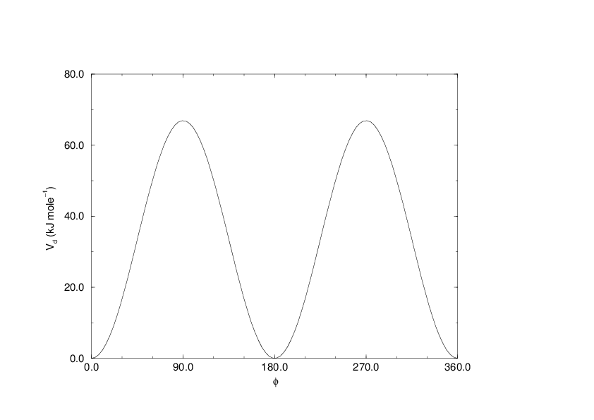
Fig. 26 Principle of proper dihedral angle (left, in trans form) and the dihedral angle potential (right).¶
Proper dihedrals: Ryckaert-Bellemans function¶
(199)¶\[V_{rb}(\phi_{ijkl}) = \sum_{n=0}^5 C_n( \cos(\psi ))^n,\]
Note: In a force field, the \(\displaystyle C_n\) coefficients for each Ryckaert-Bellemans dihedral should sum to the same value, ideally zero, to ensure consistency in the zero point of the potential energy. Failing that, energy values and free energy determination (through \(\partial H/\partial \lambda\)) might have an undesirable offset, though the dynamics itself will be unaffected.
An example of constants for \(C\) is given in Table 8.
\(C_0\) |
9.28 |
\(C_2\) |
-13.12 |
\(C_4\) |
26.24 |
\(C_1\) |
12.16 |
\(C_3\) |
-3.06 |
\(C_5\) |
-31.5 |

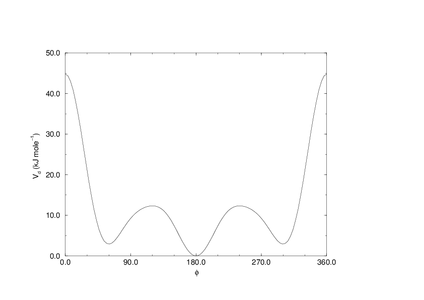
Fig. 27 Ryckaert-Bellemans dihedral potential.¶
(Note: The use of this potential implies exclusion of LJ interactions between the first and the last atom of the dihedral, and \(\psi\) is defined according to the “polymer convention” (\(\psi_{trans}=0\)).)
(200)¶\[V_{rb} (\phi_{ijkl}) ~=~ \frac{1}{2} \left[F_1(1+\cos(\phi)) + F_2( 1-\cos(2\phi)) + F_3(1+\cos(3\phi)) + F_4(1-\cos(4\phi))\right]\]
(201)¶\[\begin{split}\displaystyle \begin{array}{rcl} \displaystyle C_0&=&F_2 + \frac{1}{2} (F_1 + F_3)\\ \displaystyle C_1&=&\frac{1}{2} (- F_1 + 3 \, F_3)\\ \displaystyle C_2&=& -F_2 + 4 \, F_4\\ \displaystyle C_3&=&-2 \, F_3\\ \displaystyle C_4&=&-4 \, F_4\\ \displaystyle C_5&=&0 \end{array}\end{split}\]
Proper dihedrals: Fourier function¶
(202)¶\[V_{F} (\phi_{ijkl}) ~=~ \frac{1}{2} \left[C_1(1+\cos(\phi)) + C_2( 1-\cos(2\phi)) + C_3(1+\cos(3\phi)) + C_4(1-\cos(4\phi))\right],\]
Proper dihedrals: Restricted torsion potential¶
In a manner very similar to the restricted bending potential (see Restricted bending potential), a restricted torsion/dihedral potential is introduced:
with the advantages of being a function of \(\cos\phi\) (no problems taking the derivative of \(\sin\phi\)) and of keeping the torsion angle at only one minimum value. In this case, the factor \(\sin^2\phi\) does not allow the dihedral angle to move from the [\(-180^{\circ}\):0] to [0:\(180^{\circ}\)] interval, i.e. it cannot have maxima both at \(-\phi_0\) and \(+\phi_0\) maxima, but only one of them. For this reason, all the dihedral angles of the starting configuration should have their values in the desired angles interval and the equilibrium \(\phi_0\) value should not be too close to the interval limits (as for the restricted bending potential, described in Restricted bending potential, at least \(10^{\circ}\) difference is recommended).
Proper dihedrals: Combined bending-torsion potential¶
When the four particles forming the dihedral angle become collinear (this situation will never happen in atomistic simulations, but it can occur in coarse-grained simulations) the calculation of the torsion angle and potential leads to numerical instabilities. One way to avoid this is to use the restricted bending potential (see Restricted bending potential) that prevents the dihedral from reaching the \(180^{\circ}\) value.
Another way is to disregard any effects of the dihedral becoming ill-defined, keeping the dihedral force and potential calculation continuous in entire angle range by coupling the torsion potential (in a cosine form) with the bending potentials of the adjacent bending angles in a unique expression:
This combined bending-torsion (CBT) potential has been proposed by 88 for polymer melt simulations and is extensively described in 83.
This potential has two main advantages:
it does not only depend on the dihedral angle \(\phi_i\) (between the \(i-2\), \(i-1\), \(i\) and \(i+1\) beads) but also on the bending angles \(\theta_{i-1}\) and \(\theta_i\) defined from three adjacent beads (\(i-2\), \(i-1\) and \(i\), and \(i-1\), \(i\) and \(i+1\), respectively). The two \(\sin^3\theta\) pre-factors, tentatively suggested by 89 and theoretically discussed by 90, cancel the torsion potential and force when either of the two bending angles approaches the value of \(180^\circ\).
its dependence on \(\phi_i\) is expressed through a polynomial in \(\cos\phi_i\) that avoids the singularities in \(\phi=0^\circ\) or \(180^\circ\) in calculating the torsional force.
These two properties make the CBT potential well-behaved for MD simulations with weak constraints on the bending angles or even for steered / non-equilibrium MD in which the bending and torsion angles suffer major modifications. When using the CBT potential, the bending potentials for the adjacent \(\theta_{i-1}\) and \(\theta_i\) may have any form. It is also possible to leave out the two angle bending terms (\(\theta_{i-1}\) and \(\theta_{i}\)) completely. Fig. 28 illustrates the difference between a torsion potential with and without the \(\sin^{3}\theta\) factors (blue and gray curves, respectively).

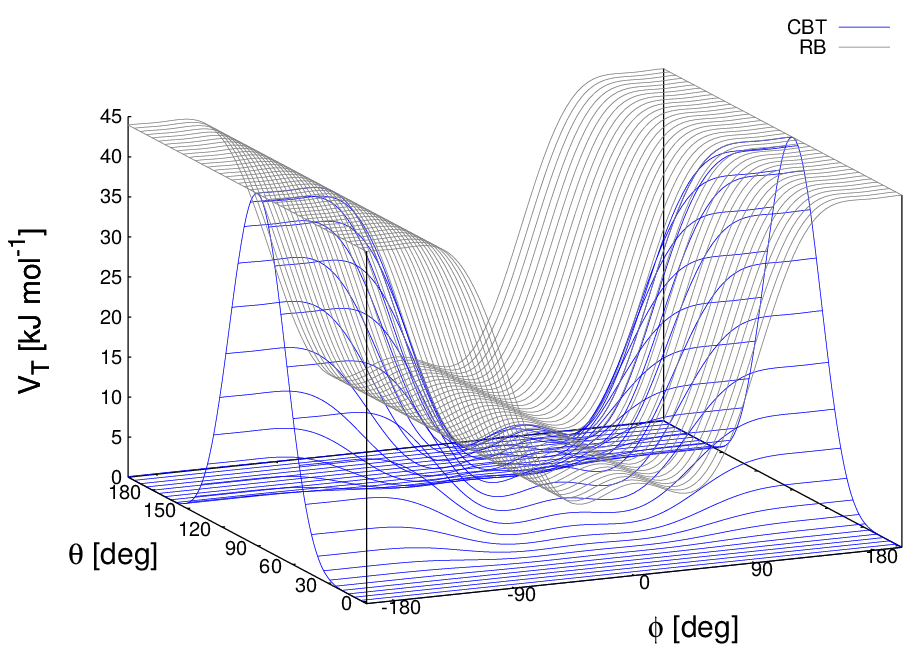
Fig. 28 Blue: surface plot of the combined bending-torsion potential ((204) with \(k = 10\) kJ mol\(^{-1}\), \(a_0=2.41\), \(a_1=-2.95\), \(a_2=0.36\), \(a_3=1.33\)) when, for simplicity, the bending angles behave the same (\(\theta_1=\theta_2=\theta\)). Gray: the same torsion potential without the \(\sin^{3}\theta\) terms (Ryckaert-Bellemans type). \(\phi\) is the dihedral angle.¶
Additionally, the derivative of \(V_{CBT}\) with respect to the Cartesian variables is straightforward:
The CBT is based on a cosine form without multiplicity, so it can only be symmetrical around \(0^{\circ}\). To obtain an asymmetrical dihedral angle distribution (e.g. only one maximum in [\(-180^{\circ}\):\(180^{\circ}\)] interval), a standard torsion potential such as harmonic angle or periodic cosine potentials should be used instead of a CBT potential. However, these two forms have the inconveniences of the force derivation (\(1/\sin\phi\)) and of the alignment of beads (\(\theta_i\) or \(\theta_{i-1} = 0^{\circ}, 180^{\circ}\)). Coupling such non-\(\cos\phi\) potentials with \(\sin^3\theta\) factors does not improve simulation stability since there are cases in which \(\theta\) and \(\phi\) are simultaneously \(180^{\circ}\). The integration at this step would be possible (due to the cancelling of the torsion potential) but the next step would be singular (\(\theta\) is not \(180^{\circ}\) and \(\phi\) is very close to \(180^{\circ}\)).
Bonded pair and 1-4 interactions¶
Most force fields do not use normal Lennard-Jones and Coulomb interactions for atoms separated by three bonds, the so-called 1-4 interactions. These interactions are still affected by the modified electronic distributions due to the chemical bonds and they are modified in the force field by the dihedral terms. For this reason the Lennard-Jones and Coulomb 1-4 interactions are often scaled down, by a fixed factor given by the force field. These factors can be supplied in the topology and the parameters can also be overriden per 1-4 interaction or atom type pair. The pair interactions can be used for any atom pair in a molecule, not only 1-4 pairs. The non-bonded interactions between such pairs should be excluded to avoid double interactions. Plain Lennard-Jones and Coulomb interactions are used which are not affected by the non-bonded interaction treatment and potential modifiers.
Tabulated bonded interaction functions¶
Tabulated bonded interactions are currently (since version 2020) disabled in GROMACS. The aim is to re-enable this functionality in the future. The section below is kept for reference.
For full flexibility, any functional shape can be used for bonds, angles and dihedrals through user-supplied tabulated functions. The functional shapes are:
(206)¶\[\begin{split}\begin{aligned} V_b(r_{ij}) &=& k \, f^b_n(r_{ij}) \\ V_a({\theta_{ijk}}) &=& k \, f^a_n({\theta_{ijk}}) \\ V_d(\phi_{ijkl}) &=& k \, f^d_n(\phi_{ijkl})\end{aligned}\end{split}\]